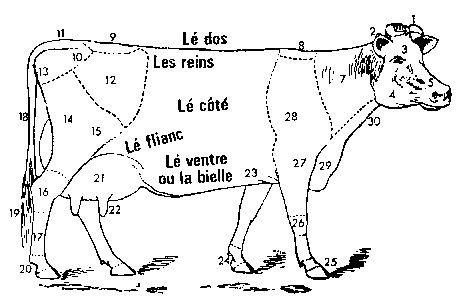

L'reporter qui va d'amor és shows d'Boeus est sus l'fi du dos ov sa hétheque teurque - v'la ch'uéq ch'est d'allé coup d'pisé des balles à West mount - et ch'fut mé qu'eut l'houneu d'etr' chouési parmi la djingue pour allé faithe un articlye sus l'Show d'Mercrédi passé.
Quand j'entri dans l'Pavilion, touos nos gens 'taient a bringi lus bètes a lus piégnyi la coue, a lus faithe manji du bran pour lus rondi l'bathi, a lus sufflié du pévre dans l'ouies pour lus faithe dréchi la tête et je n'sais tchi oquo pour les mettre en tcheu. Betot ne v'la les Stewards qui crient: Déshalez vos bètes, bouonnes gens, nou s'en va c'menchi. All rugs off!
Ch'fut MM. Ph. Billo, Journieaux et Ahyi qui jugites les jeunnes bétes. I' dounites le Preumié prix au boeu a Ouilliam Betchet, Slim Jim, viyant que ch'tait l'pus bieau boeu dans l'ring; et l'deuxième a Mabel's Scot viyant qu'ils 'taient touos les très d'accord pour cheunna. Si l'boeu a Mess Nicolle avait yeu la moindrement pus d'pétra, et pas tant d'brueutchet, i' sait v'nu pus haut.
Dans les boeus d'deux ans, ch'fut l'boeu a Wesley qu'en gangyi.
Ch'est un bieau boeu, bin fourni dans sa d'vant, bin désgagi d'l'ariéthe, ov deux cones ben pliéchis, et l'muzé éscalé; y'a déja un Améthitchain qu'est en bardjin pour: n'y'a qu'pour dithe que tchiq chents dalleurs qui les s'pathent. J'lus fis je n'sait pas combin d'clyins de dounné l'prix a Fontaine's Hope, mais les bachouards ne fites pas sembliant de m'vaie. Ch'est-tan'tchi, Mess Avri étha siex louis british si san boeu reste longtemps assez d'service. Chest un naice boeu, sorti du Gris Connon et d'la Grise Anne, et si ses ésfants lis r'semblient, y'étha du bon. J'éthais voulu vaie Financial Raleigh pus hau pliéchi; mais pas moyen ov des pids si enteuthez d'bouze.
Moussieu d'Oaklands fit bin ov Combination Premier; et j'en sis bin aise. Ch'n'est as qu'les huit louis d'prix lis vallent grand-chose, i' n'a des mille! mais les siens qu'ont m'né a chu boeu la s'en vont poué les vendre l'prix qui voudront - en raison.
L'deuxième prix n'a pas d'saillie est raisounnabye; sa couleu - néthe gradille mié-meuse - est hardi prisée au Brézi. Si Ouilli avait dounné pus d'gache d'huile au General, j'gagais eunne éscale d'hitre contre un lachét d'botte qu'il éthait yeu l'dos pus drét.
Quand vint l'moment d'jugi pour la Coupe - qu'est grande coumme eunne canne de quat' pots - ch'fut la qui fallait vaie l'monde autou du Ring. Y'en avait qu'étaient pour ch'tis chin, d'autres pour tchis la, tandi qu'd'autres nadjeurs disaient qu'les miyeu boeus n'pouaient pon compété a cause des régliéments. J'n'en sait rin! Mais ch'sis seux que Rover, l'boeu a Moussieu Le Feuvre, s'nou lis d'mandait, dithait que ch'fut li qu'avait l'pus bieau troupé d'filles souontre li. Et toutes sorties de d'siez les Priaux, la ou-és qu'il avait 'té èslvé. Mais, faut le r'counaitre y'avait étou d'tchi bon driéthe Golden Castor: et les fumelles a General Cowslip dévent dounné du lait a bouc'tées quand i' sont sus d'bounne pastuthe. L'boeu a John Vautchi vint Réserve: ch'est un bouan boeu: ch'es un boeu qui vaut pus d'sous que je n'voudrais en dounné. Y'en avait d'autres qui n'eutes rin dans chutte classe las: quouéq' lus progénituthe fusse assez bin dans lus 'general appearance' la puspart de ieux avaient lus courbelinne trop éscallée; sans compté qu'la g'niche du mitan promét d'avé des trans en boutelle.
La! Né v'la ch'qui s'appèle un bouan Rapport sus l'show. Chose seuthe que quand l'Chef l'étha lu - ou entendu translaté, car chu pouore médjan n'sait qu'l'angliais - i' m'f'tha des compliéments et pasla d'hauchi mes gages. en liesant chen-chin, nou vé tout d'un co que v'la tcha 'té éscrit par un forgeux qui sait monyé un marté.
Piteur Pain
Pour en ésfet d'la Coupe dounnée par Moussieu Peer, d'Améthique, jé comprends qu'ou s'a oquo là dans chent ans. Ou n'appartchindra jommais a persounne pour pus d'un an. Et coumme ch'est eunne coupe de grand' valeur et qu'ya des fermiers qui s'aient offuche tentés d'la vendre pour payi lus guano, ou s'nallé au Canada atou, ou la drotchi sus tchiq aut' sens. J'comprends que l'sien qui la gagne étha a fourni caution d'chinquante louis qui l'ai r'touona l'année tchi vint, en bouon esta, bin éstchuthée, ov pas un grîn sus l'argent, enfluibée dans du ouadîne.
La Chronique de Jersey 18/4/1914
Viyiz étout: